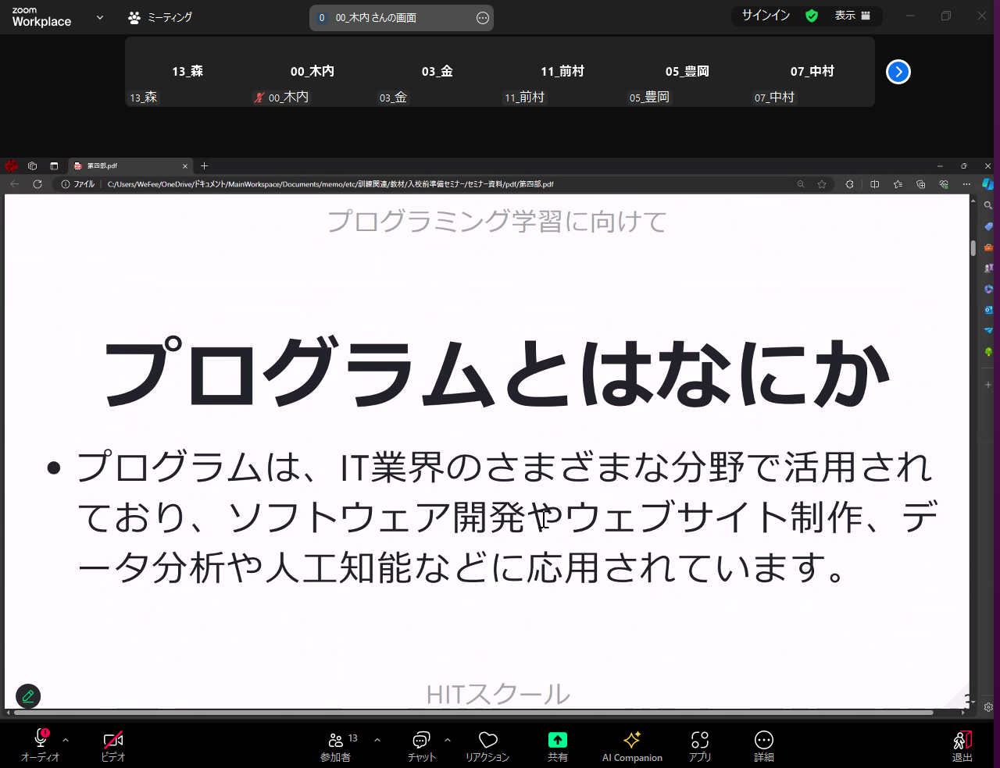
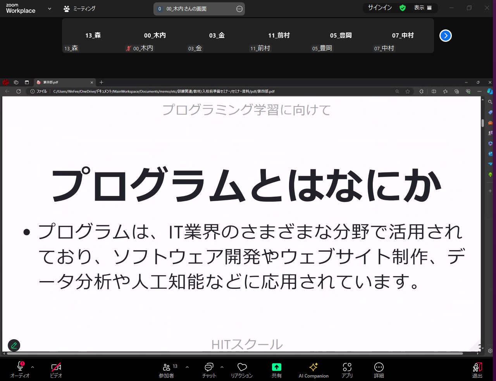
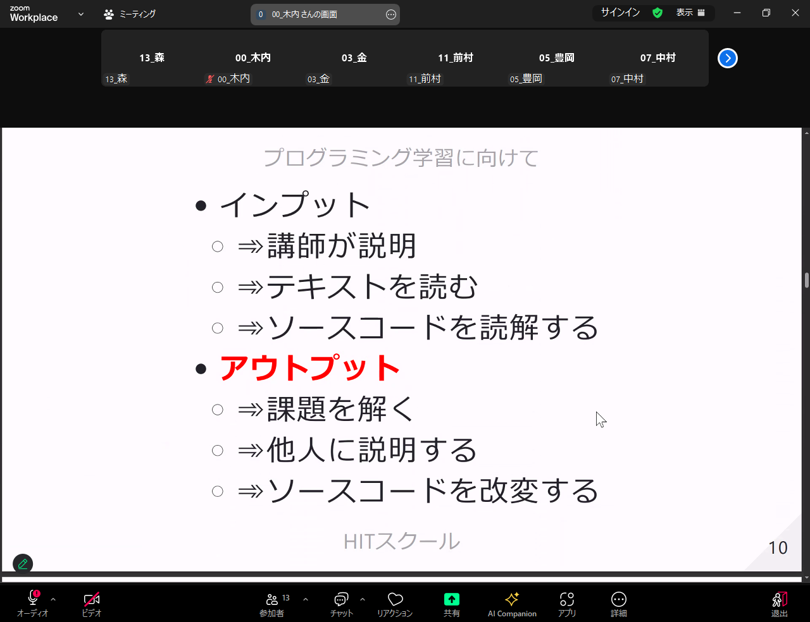
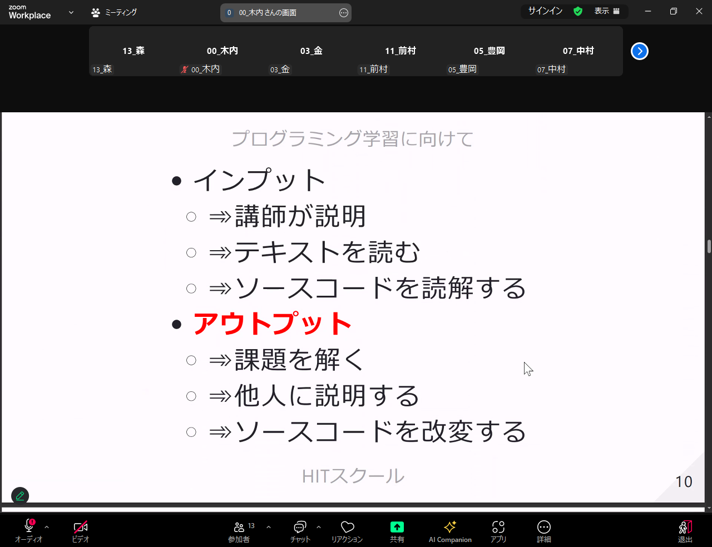

5/31 プログラミング概論
 



 


- ポートフォリオ
- 読みやすいコーディング
- インデントでととのえる
- コメント書く
- Shift+Alt+F で整える(ドキュメントのフォーマット)
- vercelで公開 flaskならサーバー無しでアプリ稼働
- インフラ系は分かりにくいので資格を取る

- できるようになるまで個人差
- 最初は分からなくてもだんだん繋がってくる


- 分かるようになってきたら
- 過去に習った内容を読み返す


- PDCAサイクルを回す
- OODA Observe（観察）、Orient（方向づけ）、Decide（意思決定）、Act（行動）の頭文字を取った略称で、「ウーダ」と読む。
- どちらが優れてるとかはなく、活躍の方向が違う
- 他責、自責 傾向を見極める質問を面接で確認される？
- 面接官のよく分からない質問は裏を読む
- 失敗談聞かれる。リカバリ方法
- 【他責型を見抜く質問】

- スイカゲームをいきなり作るのは難しい
- まずは押したらモノが出てくるところから
- 次はモノが落ちるようにする等
- 細切れにして考える


link集
memo
- 質問する時、ソースコードそのまま貼り付けない。情報漏洩
- ハロワの求人あまり良くない
- 無料で掲載できる、求人出すとお金もらえることも
- 出してるだけの企業多い。受かりにくい。
- 求人サイトはお金払って掲載してるので、就職率高い
- AWS 資格 授業で6～7割 あると良い
JavaScript
- JavaScriptメモ帳でもうごく
- CSSと同じような感じ。JSファイルに書いてリンク
6/4